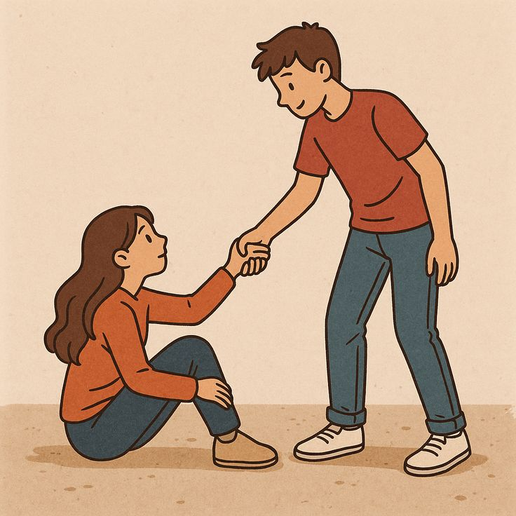
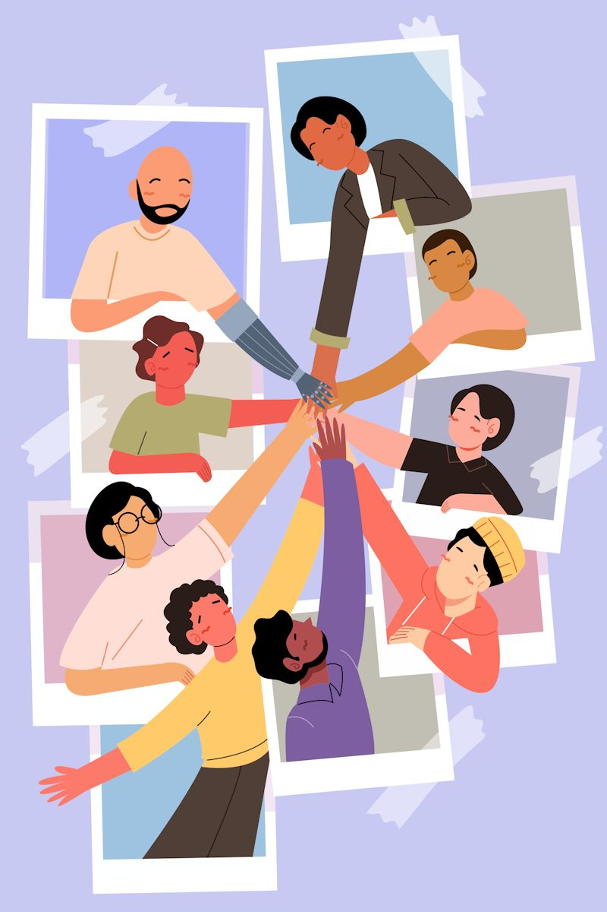
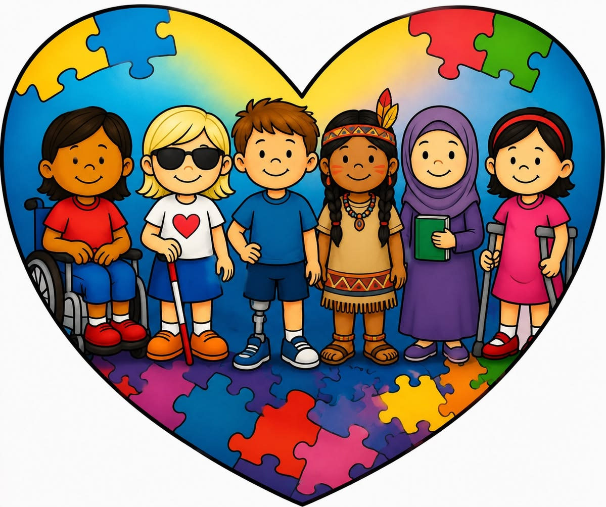
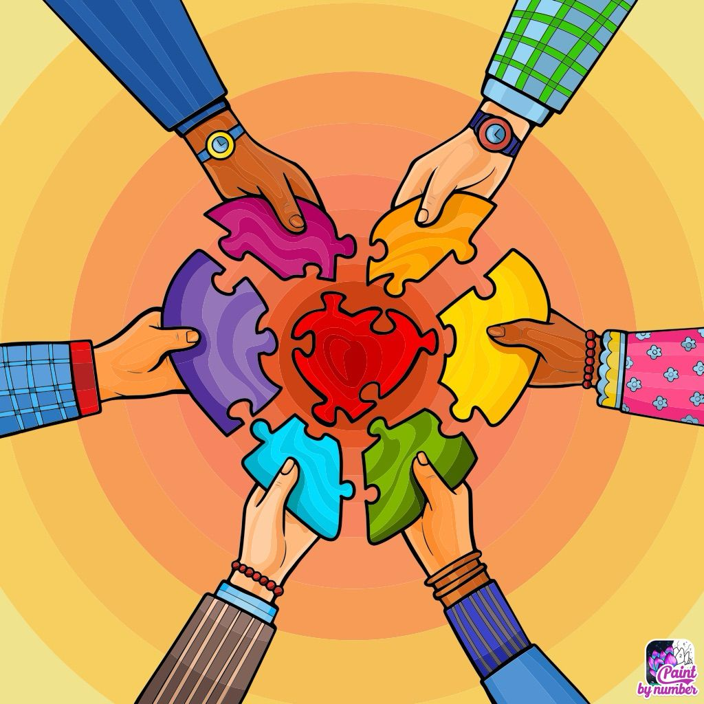
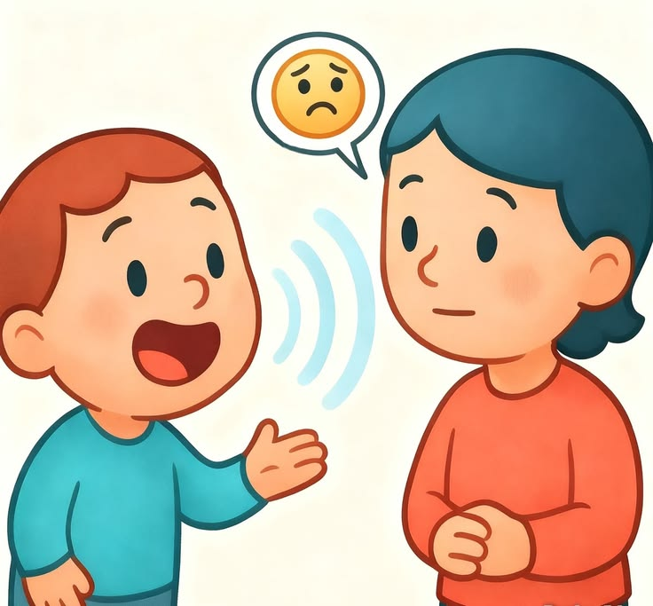
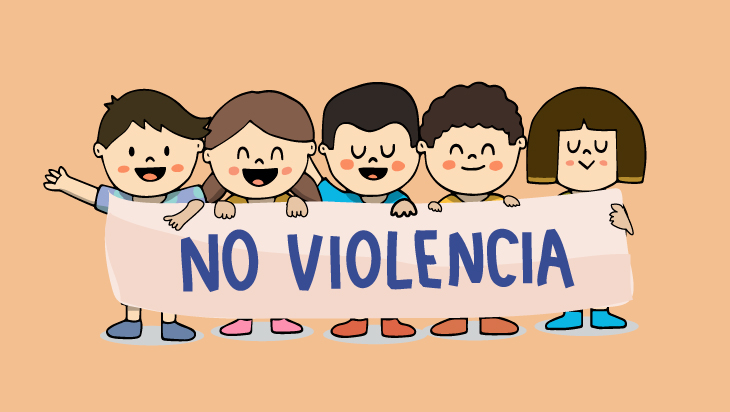
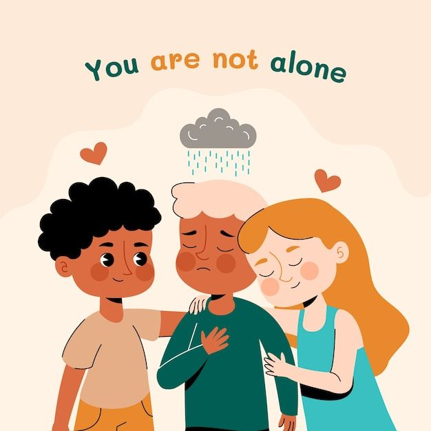
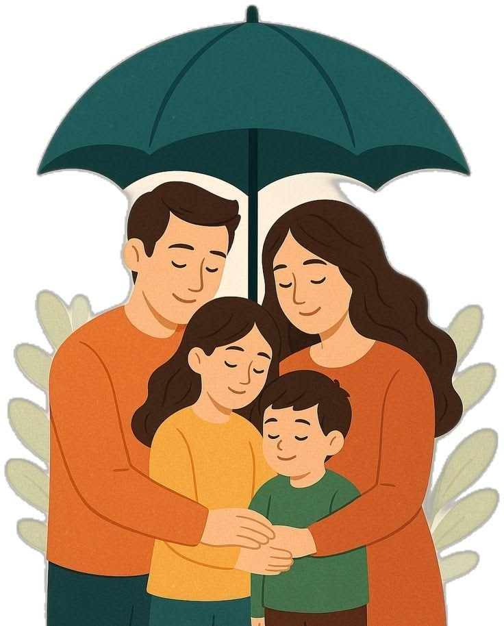

Infórmate
Aprende qué es el bullying, cómo identificarlo y qué consecuencias puede tener.
Ir a InformaciónUn espacio para reconocer el acoso escolar, entender sus consecuencias y aprender cómo podemos construir una escuela segura y respetuosa.
Conoce másTODAS LAS VOCES MERECEN RESPETO
El acoso escolar no debe normalizarse. Informarnos, escuchar a quienes lo viven y pedir ayuda son pasos importantes para detenerlo. Nadie merece recibir burlas, amenazas, exclusión o agresiones.
GALERÍA
Imágenes para reflexionar sobre el respeto, la amistad, la inclusión y la convivencia.








Aprende qué es el bullying, cómo identificarlo y qué consecuencias puede tener.
Ir a InformaciónComparte tus ideas y piensa en acciones para mejorar la convivencia.
Ir a ParticipaEscribe un comentario o una reflexión sobre el tema.
Ir a Contáctanos